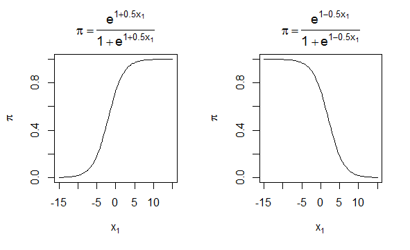
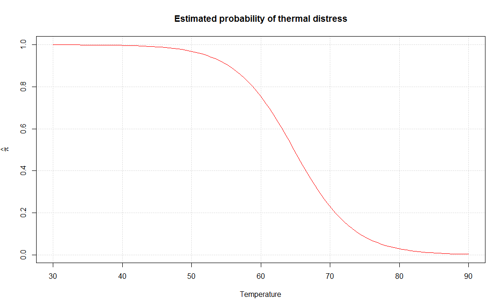

Logistic Regression Module
Dave Jacobson, Ph.D. and Halbana Tarmizi, Ph.D.
Competency area: Data Analysis
Learning objectives: After this module, students will be able to:
Differentiate the differences between modeling qualitative data with a binary response variable and simple linear and multiple linear regression
Hypothesize the form of a logistic regression function for a single predictor variable and several predictor variables
Linearize the logistic regression function using a logit transformation
Describe the shape and generate plots of the logistic regression model
Use the glm( ) function in R to fit a logistic regression model
Find the estimated probability for the response variable for specific values of the predictor variable(s) directly using the fitted logistic regression model
Generate plots of the estimated probabilities
Use the vcov( ) function in R to produce the variance-covariance matrix for the regression parameter estimators
Conduct hypothesis tests (Wald test and likelihood ratio test) of the regression parameters
Estimate and interpret odds ratios in the context of logistic regression
Compute confidence intervals (Wald interval and profile likelihood ratio interval) for odds ratios
Use the predict( ) function in R to compute estimated probabilities for specific values of the predictor variable(s)
Compute confidence intervals (Wald interval and profile likelihood ratio interval) for probabilities
Requirements
The examples, activities, and assessment exercises in this module assume basic knowledge and experience with the R programming language. If you are not familiar with R, a good resource is the R module which is also available on D2L. The code for the examples in this document were produced using Version 1.1.419 of RStudio. To use the non-base packages, such as car and mcprofile, you must install them prior to referencing them with a command such as the library( ) function.
Prior to undertaking this module, a basic understanding of elementary statistics, simple linear regression, and multiple regression is assumed. From introductory statistics, one should be familiar with concepts such as probability and sampling distributions, confidence interval estimation, and hypothesis testing. Simple Linear Regression and Multiple Regression modules are available on D2L. Another excellent source for refreshing your memory on both basic statistical topics and simple linear regression is provided in the next section.
Supplementary Materials
Besides the information provided in this document, a number of other materials are posted on D2L for your use in learning multiple regression. They include:
Code for reproducing all of the examples
Code for the activities
Code for the Final Assessment questions
A pdf file of the third edition of OpenIntro Statistics by David M. Diez, Christopher D. Barr, and Mine Cetinkaya-Rundel. In particular, Chapter 8 (pages 372-404) is devoted to “Multiple and Logistic Regression.” Pages 385-404 provide additional examples and exercises on many of the topics that are covered in the module. The first six chapters also can be used as a review of material typically covered in an introductory statistics course. In addition, Chapter 7 (pages 331-371) is an “Introduction to Linear Regression” and the first part of Chapter 8 (pages 372-385) covers multiple regression.
YouTube videos:
Logistic Regression: Introduction to Binary Outcomes
Logistic Regression: Interpretation of Coefficients and Forecasting
Logistic Regression in R, Clearly Explained!!!!
A link to the code site is also provided
StatQuest: Logistic Regression
Logistic Regression Details Pt1: Coefficients
Logistic Regression Details Pt2: Maximum Likelihood
Logistic Regression Details Pt3: R-Squared and p-value
For those that may be interested in using Excel instead of R, links to the following resources are posted:
Real Statistics Using Excel: Downloading and installing the Real Statistics Resource Pack
Real Statistics Using Excel: Accessing Real Statistics Data Analysis Tools
YouTube video: Logistic Regression Using Excel
Data in the example can be downloaded from Kaggle. You must create a Kaggle account before downloading the data.
Following is a list of online materials which are referenced in the content of this document. Many of them provide additional explanations and examples beyond what is covered in the following sections.
Resources:
https://www.statmethods.net/advgraphs/layout.html
https://thomasleeper.com/Rcourse/Tutorials/curve.html
https://www.statmethods.net/advstats/glm.html
https://stat.ethz.ch/R-manual/R-devel/library/stats/html/vcov.html
http://cran.r-project.org/web/packages/car/car.pdf
https://stats.stackexchange.com/questions/177005/interpreting-glm-output-from-r
https://stat.ethz.ch/R-manual/R-devel/library/stats/html/predict.glm.html
https://cran.r-project.org/web/packages/mcprofile/mcprofile.pdf
Introduction
In simple linear regression and multiple regression, the response variable \(y\) is regarded as a continuous quantitative variable. The predictor variables, however, are quantitative or qualitative. There are situations, however, where the response variable is qualitative. In this module, we present methods for dealing with this situation. The methods presented are very different from the method of least squares used in simple linear regression and multiple regression.
Consider a procedure in which individuals are selected on the basis of their scores in a battery of tests. After five years the candidates are classified as “good” or “poor.” We are interested in examining the ability of the tests to predict the job performance of the candidates. Here the response variable, performance, is dichotomous. We can code “good” as 1 and “poor” as 0, for example. The predictor variables are the scores in the tests.
In a study to determine the risk factors for cancer, health records of several people were studied. Date were collected on several variables, such as age, gender, smoking, diet, and the family’s medical history. The response variable was the person had cancer (\(y = 1\)) or did not have cancer (\(y = 0\)).
In the financial community the “health” of a business is of primary concern. The response variable is solvency of the firm (bankrupt = 0, solvent = 1), and the predictor variables are the various financial characteristics associated with the firm. Situations where the response variable is a dichotomous variable are quite common and occur extensively in statistical applications.
Modeling Qualitative Data
The qualitative data with which we are dealing, the binary response variable, can always be coded as having two values, 0 or 1. Rather than predicting these two values we try to model the probabilities that the response takes one of these two values. The limitation of the standard linear regression model is obvious.
We illustrate this point by considering a simple regression problem in which we have only one predictor. The same considerations hold for the multiple regression case. Let \(\pi\) denote the probability that \(y = 1\). If we use the standard linear model to describe \(\pi\), then our model for the probability would be
\(\pi = \Pr\left( y = 1 \right) = \ \beta_{0} + \ \beta_{1}x\).
Since \(\pi\) is a probability it must lie between 0 and 1. The linear function given above is unbounded, and hence cannot be used to model probability. There is another reason why the ordinary least squares method is unsuitable. The response variable \(y\) is a binomial random variable, consequently its variance will be a function of \(\pi\), and depends on \(x\). The assumption of equal variance (homoscedasticity) does not hold. We could use the weighted least squares, but there are problems with that approach. The values of \(\pi\) are not known. In order to use the weighted least squares approach, we would have to start with an initial guess for the value of \(\pi\), and then iterate. Instead of this complex method we will describe an alternative method for modeling probabilities.
The Logit Model
The relationship between the probability \(\pi\) and \(x\) can often be represented by a logistic response function. It resembles an S-shaped curve. The probability \(\text{π\ }\)initially increases slowly with increase in \(x\), then the increase accelerates, finally stabilizes, but does not increase beyond 1. Intuitively this makes sense. Consider the probability of a questionnaire being returned as a function of cash reward, or the probability of passing a test as a function of the time put in studying for it.
The shape of the S-curve can be reproduced if we model the probabilities as follows:
\(\pi = \Pr\left( y = 1 \right) = \ \frac{e^{\beta_{0} + \beta_{1}x}}{1 + \ e^{\beta_{0} + \beta_{1}x}}\),
where \(e\) is the base of the natural logarithm. The probabilities here are modeled by the distribution function (cumulative probability function) of the logistic distribution. There are other ways of modeling the probabilities that would also produce the S-curve. The cumulative distribution of the normal curve has also been used. This gives rise to the probit model. We will not discuss the probit model in this module, as we consider the logistic model simpler and superior to the probit model.
The logistic model can be generalized directly to the situation where we have several predictor variables. The probability \(\pi\) is modeled as
\(\pi = \Pr\left( y = 1 \right) = \ \frac{e^{\beta_{0} + \beta_{1}x_{1} + \beta_{2}x_{2} + \cdots + \beta_{p}x_{p}}}{1 + \ e^{\beta_{0} + \beta_{1}x_{1} + \cdots + \beta_{p}x_{p}}}\).
The above equation is called the logistic regression function. It is nonlinear in the parameters \(\beta_{0,}\) \(\beta_{1,\ \ \ \cdots,\ \ \ }\beta_{p}\). However, it can be linearized by the logit transformation. Instead of working directly with \(\pi\) we work with a transformed value of \(\pi\). If \(\pi\) is the probability of an event happening, the ratio \(\pi\) / \(\left( 1 - \ \pi \right)\) is called the odds ratio for the event. Since
\(1 - \ \pi = \Pr\left( y = 0 \right) = \ \frac{1}{1 + \ e^{\beta_{0} + \beta_{1}x_{1} + \cdots + \beta_{p}x_{p}}}\),
then
\(\frac{\pi}{1 - \ \pi} = \ e^{\beta_{0} + \beta_{1}x_{1} + \cdots + \beta_{p}x_{p}}\).
Taking the natural logarithm of both sides of the above equation, we obtain
\[\ln\left( \frac{\pi}{1 - \pi} \right) = \ \beta_{0} + \ \beta_{1}x_{1} + \ \cdots + \ \beta_{p}x_{p}.\]
The logarithm of the odds ratio is called the logit. It can be seen from the above that the logit transformation produces a linear function of the parameters \(\beta_{0},\ \beta_{1},\ \cdots,\ \beta_{p}\). Note also that while the range of values of \(\pi\) is between 0 and 1, the range of values of ln[\(\text{π\ }\)/ \(\left( 1 - \ \pi \right)\)] is between \(- \infty\) and \(+ \infty\), which makes the logits (the logarithm of the odds ratio) more appropriate for linear regression fitting.
Modeling the response probabilities by the logistic distribution and estimating the parameters of the model constitutes fitting a logistic regression. In logistic regression the fitting is carried out by working with the logits. The logit transformation produces a model that is linear in the parameters. The method of estimation used is the maximum likelihood method. The maximum likelihood estimates are obtained numerically, using an iterative procedure. Unlike least squares fitting, no closed-form expression exists for the estimates of the parameters.
To fit a logistic regression in practice a computer program is essential. In this module, we will fit the logistic regression equation with R. After the fitting one looks at the same set of questions that are usually considered in linear regression. Questions about the suitability of the model, the variables to be retained, and goodness of fit are all considered. Tools used are not the usual \(R^{2},\ t\)-, and \(F\)-Tests, the ones employed in least squares regression, but others which provide answers to these same questions. Hypothesis testing is done by different methods, since the method of estimation is maximum likelihood as opposed to least squares. Information criteria such as AIC and BIC can be used for model selection. Instead of SSE, the logarithm of the likelihood for the fitted model is used.
Plot of the Logistic Regression Model
The purpose of this example is to examine the shape of the logistic regression model when there is a single explanatory variable \(x_{1}\). Consider the model \(\pi = \ \frac{e^{\beta_{0} + \ \beta_{1}x_{1}}}{1 + \ e^{\beta_{0} + \ \beta_{1}x_{1}}}\), which is equivalently expressed as ln\(\left( \frac{\pi}{1 - \ \pi} \right)\) = \(\beta_{0} + \ \beta_{1}x_{1}\). Suppose that \(\beta_{0} = 1\) and \(\beta_{1} = 0.5.\) Figure 1 shows this model plotted on the left. The plot on the right is the same, but with \(\beta_{1} = \ - 0.5\). 
Figure 1. Logistic regression model for \(\beta_{0} = 1\) and \(\beta_{1} = 0.5\) and \(- 0.5\).
We can make the following generalizations from examining the model and these plots:
\(0\ < \ \pi\ < 1\)
When \(\beta_{1}\ > 0\), there is a positive relationship between \(x_{1}\) and \(\pi\). When \(\beta_{1}\ < 0\), there is a negative relationship between \(x_{1}\) and \(\pi\).
The shape of the curve is somewhat similar to the letter S (this shape is called “sigmoidal”).
The slope of the curve is dependent on the value of \(x_{1}\). We can show this mathematically by taking the derivative of \(\pi\) with respect to \(x_{1}\): \(\partial\pi\)/\(\partial x_{1}\) = \(\beta_{1}\pi\left( 1 - \ \pi \right)\).
Above \(\pi = 0.5\) is a mirror image of below \(\pi = 0.5\).
In figure 2 is the R code used to create the plots in figure 1.
Figure 2. R code used for creating the plots in figure 1.
The par( ) function sets graphics parameters that control various plotting options. In our code, we use it to partition the graphics window into 1 row and 2 columns using the mfrow argument, which stands for “make frame by row.” (https://www.statmethods.net/advgraphs/layout.html)
The curve( ) function is used to plot the model. This is a very useful function for plotting mathematical functions that vary over one variable. In our example, the expr argument contains the logistic regression model where the letter x must be used as the variable name for the variable plotted on the x-axis. By default, the mathematical function is evaluated at 101 equally spaced x-axis values within the range specified by xlim. These resulting 101 points are then joined by straight lines. Also within curve( ), we use the expression( ) function with the title and axis labels in order to Greek letters and fractions. (https://thomasleeper.com/Rcourse/Tutorials/curve.html)
Activity 1: Generate two plots of the logistic regression model with \(\beta_{0} = 1\). First, assume \(\beta_{1} = 0.8\). For the second plot, use \(\beta_{1}\) = \(- 0.8\).
Logistic Regression and the GLM
The response in the logistic regression formula is the log odds of a binary outcome of 0 or 1. We only observe the binary outcome, not the log odds, so special statistical methods are needed to fit the equation. Logistic regression is a special instance of a generalized linear model (GLM) developed to extend linear regression to other settings.
Single Predictor Model
In R, to fit a logistic regression, the glm function is used with the family parameter set to binomial. (https://www.statmethods.net/advstats/glm.html) A classic example in logistic regression modeling involves estimating the probability of thermal distress (TD) for the space shuttle given the temperature at lift off. For the 23 space shuttle flights before the Challenger mission disaster in 1986, the following table shows the temperature (\(℉\)) at the time of the flight and whether at least one primary O-ring suffered thermal distress.
| Ft | Temperature | TD |
|---|---|---|
| 1 | 66 | 0 |
| 2 | 70 | 1 |
| 3 | 69 | 0 |
| 4 | 68 | 0 |
| 5 | 67 | 0 |
| 6 | 72 | 0 |
| 7 | 73 | 0 |
| 8 | 70 | 0 |
| 9 | 57 | 1 |
| 10 | 63 | 1 |
| 11 | 70 | 1 |
| 12 | 78 | 0 |
| 13 | 67 | 0 |
| 14 | 53 | 1 |
| 15 | 67 | 0 |
| 16 | 75 | 0 |
| 17 | 70 | 0 |
| 18 | 81 | 0 |
| 19 | 76 | 0 |
| 20 | 79 | 0 |
| 21 | 75 | 1 |
| 22 | 76 | 0 |
| 23 | 58 | 1 |
Note: Ft = flight no., TD = thermal distress (1 = yes, 0 = no)
Source: Data based on Table 1 in S.R. Dalal, E.B. Fowlkes and B. Hoadley, J. Am. Statist. Assoc., 84: 945-957, 1989.
The code in figure 3 shows how we get the data into a data frame.
Figure 3. Creation of data frame consisting of temperature and thermal distress status for space shuttle flights prior to Challenger disaster.
The code in figure 4 fits a logistic regression to model the effect of temperature on the probability of thermal distress.
Figure 4. Code for fitting a logistic regression to the space shuttle data.
The results from glm( ) are saved into an object that we call mod.fit. The arguments within glm( ) are:
formula – Specifies the model with a ~ separating the response and explanatory variables.
family – Gives the type of model to be fit where binomial states the response type and logit is the function on the left side of the model.
data – Name of the data frame containing the variables.
By printing the mod.fit object through executing mod.fit at the command prompt, we see that the estimated logistic regression model is
logit(\(\widehat{\pi}\)) = \(15.0429 - 0.2322\)temp.
Because there is a negative parameter estimate corresponding to temp, the estimated probability of thermal distress decreases as the temperature increases.
There is actually much more information stored within the mod.fit object. Through the use of the names( ) function, we obtain the list of items shown in figure 5.
Figure 5. List of items in the mod.fit object.
Figure 6 shows mod.fit$coefficients contains \({\widehat{\beta}}_{0}\) and \({\widehat{\beta}}_{1}\).
Figure 6. Extraction of coefficients from the mod.fit object.
To see a summary of all the information in mod.fit, we can use the summary( ) function (figure 7).
Figure 7. Summary of mod.fit object.
The output in figure 7 displays a lot of information about the model that we will describe throughout this module. For now, note that the values of \({\widehat{\beta}}_{0}\) and \({\widehat{\beta}}_{1}\) are displayed in the “Coefficients” table under the “Estimate” header. Also, it took 5 iterations to obtain these estimates as given by the last line in the output.
There are only a few simple cases where the parameter estimates in logistic regression models have closed-form solutions (i.e. we cannot generally write out the parameter estimates in terms of the observed data). Instead, we use iterative numerical procedures to successively find estimates of the regression parameters. When the estimates change negligibly for successive iterations, we say that they have converged. If the estimates continue to change noticeably up to a selected maximum number of iterations, the iterative numerical procedure has not converged, and those final parameter estimates should not be used.
Within R and most statistical software packages, iteratively reweighted least squares (IRLS) is the iterative numerical procedure used to find the parameter estimates. This procedure uses the weighted least squares criterion, which is commonly used for normal linear regression models when there is non-constant variance. The IRLS algorithm alternates between updating the weights and the parameter estimates in an iterative fashion until convergence is reached. The glm( ) function within R implements this parameter estimation procedure. “Fisher scoring” is equivalent to IRLS for logistic regression models.
We can find the estimated probability of thermal distress for a particular temperature using:
\[\widehat{\pi} = \ \frac{e^{15.0429 - 0.2322temp}}{1 + \ e^{15.0429 - 0.2322temp}}\]
For example, the probability of thermal distress at a temperature of 56\(℉\) is 0.885 (figure 8).
Figure 8. Probability of thermal distress at a temperature of 56\(℉\).
We can estimate the probability of thermal distress at 31\(℉\), the temperature at the time of the Challenger flight, using the code in figure 9.
Figure 9. Probability of thermal distress at a temperature of 31\(℉\).
However, note that the minimum temperature in the data used to develop the model is 53\(℉\). Hence an extrapolation to 31\(℉\ \)may be a possible problem with using the model at this temperature.
We can plot the model with the curve( ) function in R using the code in figure 10.
Figure 10. Code for plotting the model in the mod.fit object.
The plot is shown in figure 11.

Figure 11. Plot of the model relating probability of thermal distress to temperature.
Activity 2: Hastie and Tibshirani (1990, p. 282) described a study to determine risk factors for kyphosis, which is severe forward flexion of the spine following corrective spinal surgery. The age in months at the time of the operation for the 18 subjects for whom kyphosis was present were 12, 15, 42, 52, 59, 73, 82, 91, 96, 105, 114, 120, 121, 128, 130, 139, 139, 157 and for the 22 subjects for whom kyphosis was absent were 1, 1, 2, 8, 11, 18, 22, 31, 37, 61, 72, 81, 97, 112, 118, 127, 131, 140, 151, 159, 177, 206.
Fit a logistic regression model using age as a predictor of whether kyphosis is present (i.e., 1 = kyphosis present, 0 = kyphosis absent).
Estimate the probability of kyphosis being present at an age of 150 months.
Plot the model with the curve( ) function in R.
Multiple Predictor Model
If more than one explanatory variable is included in the model, the variable names can be separated by “+” symbols in the formula argument. For example, the following table shows results of a study about Y = whether a patient having surgery with general anesthesia experienced a sore throat on waking (1 = yes) as a function of D = duration of the surgery (in minutes) and T = type of device used to secure the airway (0 = laryngeal mask airway, 1 = tracheal tube).
| Patient | D | T | Y |
|---|---|---|---|
| 1 | 45 | 0 | 0 |
| 2 | 15 | 0 | 0 |
| 3 | 40 | 0 | 1 |
| 4 | 83 | 1 | 1 |
| 5 | 90 | 1 | 1 |
| 6 | 25 | 1 | 1 |
| 7 | 35 | 0 | 1 |
| 8 | 65 | 0 | 1 |
| 9 | 95 | 0 | 1 |
| 10 | 35 | 0 | 1 |
| 11 | 75 | 0 | 1 |
| 12 | 45 | 1 | 1 |
| 13 | 50 | 1 | 0 |
| 14 | 75 | 1 | 1 |
| 15 | 30 | 0 | 0 |
| 16 | 25 | 0 | 1 |
| 17 | 20 | 1 | 0 |
| 18 | 60 | 1 | 1 |
| 19 | 70 | 1 | 1 |
| 20 | 30 | 0 | 1 |
| 21 | 60 | 0 | 1 |
| 22 | 61 | 0 | 0 |
| 23 | 65 | 0 | 1 |
| 24 | 15 | 1 | 0 |
| 25 | 20 | 1 | 0 |
| 26 | 45 | 0 | 1 |
| 27 | 15 | 1 | 0 |
| 28 | 25 | 0 | 1 |
| 29 | 15 | 1 | 0 |
| 30 | 30 | 0 | 1 |
| 31 | 40 | 0 | 1 |
| 32 | 15 | 1 | 0 |
| 33 | 135 | 1 | 1 |
| 34 | 20 | 1 | 0 |
| 35 | 40 | 1 | 0 |
Source: Data from D. Collett, in Encyclopedia of Biostatistics, Wiley, New York, 1998, pp. 350-358.
Predictors are D = duration of surgery and T = type of device.
Figure 12 shows how we get the data into a data frame.
Figure 12. Code for creation of data frame relating Y to D and T.
Figure 13 shows the data frame.
Figure 13. Data frame consisting of the variables D, T, and Y.
We find the estimated logistic regression model using the code in figure 14.
Figure 14. Code for fitting a logistic regression model relating Y to D and T.
The estimated logistic regression model is logit\(\left( \widehat{\pi} \right)\) = \(- 1.41734 + 0.06868D - 1.65895T.\)
Activity 3: Suppose you are investigating allegations of gender discrimination in the hiring practices of a particular firm. An equal-rights group claims that females are less likely to be hired than males with the same background, experience, and other qualifications. The data on the table below was collected on 28 former applicants.
\(y\) = 1 if hired; \(y\) = 0 if not
\(x_{1}\) = Years of higher education (4, 6, or 8)
\(x_{2}\) = Years of experience
\(x_{3}\) = 1 if male applicant; \(x_{3}\) = 0 if female applicant
HIRING STATUS \[\mathbf{y}\] |
EDUCATION \(\mathbf{x}_{\mathbf{1}}\), years |
EXPERIENCE \(\mathbf{x}_{\mathbf{2}}\), years |
GENDER \[\mathbf{x}_{\mathbf{3}}\] |
|---|---|---|---|
| 0 | 6 | 2 | 0 |
| 0 | 4 | 0 | 1 |
| 1 | 6 | 6 | 1 |
| 1 | 6 | 3 | 1 |
| 0 | 4 | 1 | 0 |
| 1 | 8 | 3 | 0 |
| 0 | 4 | 2 | 1 |
| 0 | 4 | 4 | 0 |
| 0 | 6 | 1 | 0 |
| 1 | 8 | 10 | 0 |
| 0 | 4 | 2 | 1 |
| 0 | 8 | 5 | 0 |
| 0 | 4 | 2 | 0 |
| 0 | 6 | 7 | 0 |
| 1 | 4 | 5 | 1 |
| 0 | 6 | 4 | 0 |
| 0 | 8 | 0 | 1 |
| 1 | 6 | 1 | 1 |
| 0 | 4 | 7 | 0 |
| 0 | 4 | 1 | 1 |
| 0 | 4 | 5 | 0 |
| 0 | 6 | 0 | 1 |
| 1 | 8 | 5 | 1 |
| 0 | 4 | 9 | 0 |
| 0 | 8 | 1 | 0 |
| 0 | 6 | 1 | 1 |
| 1 | 4 | 10 | 1 |
| 1 | 6 | 12 | 0 |
Use the data to fit the estimated logistic regression model.
Estimate the probability of being hired when \(x_{1} = 4,\ x_{2} = 0,\) and \(x_{3} = 1.\)
We will interpret the output in figures 7 and 14 after describing generalized linear models in more detail.
Generalized Linear Models
Generalized linear models (GLMs) are the second most important class of models besides regression. GLMs are characterized by two main components:
A probability distribution or family (binomial in the case of logistic regression)
A link function mapping the response to the predictors (logit in the case of logistic regression)
Logistic regression is by far the most common form of GLM. A data scientist will encounter other types of GLMs. Sometimes a log link function is used instead of the logit; in practice, use of a log link is unlikely to lead to very different results from the use of logit for most applications. The Poisson distribution is commonly used to model count data (e.g., the number of times a user visits a web page in a certain amount of time). Other families include negative binomial and gamma, often used to model elapsed time (e.g., time to failure). In contrast to logistic regression, application of GLMs with these models is more nuanced and involves greater care.
Variance-Covariance Matrix
The estimated variance-covariance matrix for \({\widehat{\beta}}_{0}\), \(\cdots\), \({\widehat{\beta}}_{p}\) has the form:
\[\begin{bmatrix} \text{Var}\left( {\widehat{\beta}}_{0} \right) & \cdots & \text{Cov}\left( {\widehat{\beta}}_{0},{\widehat{\beta}}_{p} \right) \\ \vdots & \ddots & \vdots \\ \text{Cov}\left( {\widehat{\beta}}_{0},{\widehat{\beta}}_{p} \right) & \cdots & \text{Var}\left( {\widehat{\beta}}_{p} \right) \\ \end{bmatrix}\]
Thus, the (1, 1) element is the estimated variance of \({\widehat{\beta}}_{0}\), the (1, 2) element is the estimated covariance of \({\widehat{\beta}}_{0}\) and \({\widehat{\beta}}_{1}\), \(\cdots\) . We will more simply call this matrix a “covariance matrix” for the remainder of the module.
From the summary(mod.fit) output earlier (figure 7), we have
We can limit the displayed output by using the fact that summary( ) creates a list with coefficients as one component (figure 15).
Figure 15. Limited output of the summary( ) function.
The Std. Error column gives the standard errors for the regression parameter estimators - \(\widehat{\text{Var}}\left( {\widehat{\beta}}_{0} \right)^{1/2} = 7.3786\) in the “(Intercept)” row and \(\widehat{\text{Var}}\left( {\widehat{\beta}}_{1} \right)^{1/2} = 0.1082\) in the “temp” row.
The vcov( ) function produces the estimated covariance matrix (figure 16). (https://stat.ethz.ch/R-manual/R-devel/library/stats/html/vcov.html)
Figure 16. Covariance matrix of the mod.fit object.
We can extract the estimated variance for \({\widehat{\beta}}_{1}\) by specifying the (2, 2) element of the matrix (figure 17).
Figure 17. Extraction of the estimated variance for \({\widehat{\beta}}_{1}\).
Thus, \(\widehat{\text{Var}}\left( {\widehat{\beta}}_{1} \right)\) = 0.01171512, which is the square of 0.1082 given within the coefficients table.
Activity 4: Refer to Activity 2.
Use vcov( ) in R to find \(\widehat{\text{Var}}\left( {\widehat{\beta}}_{0} \right)\ \)and \(\widehat{\text{Var}}\left( {\widehat{\beta}}_{1} \right).\)
Use summary( )$coefficients in R to find the estimated standard errors for the regression parameters.
Activity 5: Refer to Activity 3.
Use vcov( ) in R to find \(\widehat{\text{Var}}\left( {\widehat{\beta}}_{0} \right),\ \widehat{\text{Var}}\left( {\widehat{\beta}}_{1} \right)\), \(\widehat{\text{Var}}\left( {\widehat{\beta}}_{2} \right)\), and \(\widehat{\text{Var}}{\widehat{\beta}}_{3}\).
Use summary( )$coefficients in R to find the estimated standard errors for the regression parameters.
Hypothesis Tests for Regression Parameters
We often want to assess the importance of an explanatory variable or groups of explanatory variables. One way to make this assessment is through using hypothesis tests. For example, suppose we are interested in the \(r^{\text{th}}\) explanatory variable \(x_{r}\) in the model
logit\(\left( \pi \right)\) = \(\beta_{0} + \ \beta_{1}x_{1} + \ \cdots + \ \beta_{r}x_{r} + \ \cdots + \ \beta_{p}x_{p}\)
If \(\beta_{r} = 0\), we see that \(x_{r}\) would be excluded from the model. Thus, we are interested in hypothesis tests of the form:
\[H_{0}:\ \ \beta_{r} = 0\]
\(H_{a}\): \(\beta_{r}\ \neq 0\)
Alternatively, we could state the hypotheses as:
\(H_{0}\): logit\(\left( \pi \right) = \ \beta_{0} + \ \beta_{1}x_{1} + \ \cdots + \ \beta_{r - 1}x_{r - 1} + \ \beta_{r + 1}x_{r + 1} + \ \cdots + \ \beta_{p}x_{p}\)
\(H_{a}\): logit\(\left( \pi \right) = \ \beta_{0} + \ \beta_{1}x_{1} + \ \cdots + \ \beta_{r}x_{r} + \ \cdots + \ \beta_{p}x_{p}\)
Notice that the null hypothesis model terms are all included within the alternative hypothesis model. In other words, the null hypothesis model is a special case of the alternative hypothesis model. For this reason, the null hypothesis model is often referred to as a reduced model and the alternative hypothesis model is often referred to as a full model. The purpose of this section is to examine two ways that hypothesis tests of this form can be performed.
Wald Test
The Wald statistic is
\[Z_{0} = \ \frac{{\widehat{\beta}}_{r}}{\sqrt{\text{Var}\left( {\widehat{\beta}}_{r} \right)}}\]
to test \(H_{0}\): \(\beta_{r} = \ 0\ \)vs. \(H_{a}\): \(\beta_{r}\ \neq 0\). For a large sample, the test statistic has an approximate standard normal distribution if the null hypothesis of \(\beta_{r} = 0\) is true. Thus, reject the null hypothesis if we observe a test statistic value that is “unusual” for a standard normal distribution. The \(p\)-value is 2P(Z > |\(Z_{0}\)|) where Z ~ N(0,1). Wald test statistics and \(p\)-values are automatically provided for individual \(\beta\) parameters using code like summary(mod.fit). Recall figure 7 in the temperature and thermal distress example:
Let’s use the Wald test to test the hypothesis that temperature has no effect: \(Z_{0} = \ - 2.145\) and \(p\)-value \(= 0.0320\). Since \(p\)-value \(< \ \alpha = 0.05\) (typical significance level), we reject \(H_{0}:\ \ \beta_{1} = 0.\) There is sufficient evidence to indicate temperature has an effect on the probability of thermal distress. If \(\alpha = 0.01\), there would not be a rejection of the null hypothesis. It is preferable to word a conclusion like: There is marginal evidence to indicate that temperature has an effect on the probability of thermal distress.
Activity 6: Refer to Activities 2 and 4. Test whether age has a significant effect using the Wald test.
The Wald test can also be performed for more than one parameter at the same time. Recall the summary of the mod.fit2 object of figure 14 for the experiencing sore throat after surgery example:
We will perform Wald tests on both duration of the surgery (D) and type of device used to secure the airway (T) in the model logit\(\left( \pi \right) = \ \beta_{0} + \ \beta_{1}D + \ \beta_{2}\text{T.}\) Here is a summary of the tests using \(\alpha = 0.05:\)
| Duration of the surgery (D) | Type of device used to secure the airway (T) |
|---|---|
\[H_{0}:\ \ \beta_{1} = 0\] \[H_{a}:\ \ \beta_{1}\ \neq 0\] |
\[H_{0}:\ \ \beta_{2} = 0\] \[H_{a}:\ \ \beta_{2}\ \neq 0\] |
| \[Z_{0} = 2.600\] | \[Z_{0} = - 1.798\] |
| \(p\)-value = 0.00931 | \(p\)-value = 0.07224 |
| Reject \(H_{0}\) because \(p\)-value \(< \ \alpha = 0.05.\) | Fail to reject \(H_{0}\) because \(p\)-value \(> \ \alpha = 0.05.\) |
| There is significant evidence to indicate duration has an effect on the probability of experiencing a sore throat given type of device is in the model. | There is insufficient evidence to indicate type of device has an effect on the probability of experiencing a sore throat given duration of surgery is in the model. |
Activity 7: Refer to Activities 3 and 5. Perform Wald tests on each of the independent variables.
Likelihood Ratio Test (LRT)
Generally, a better test than the Wald is an LRT. The LRT statistic is:
\(\Lambda\) = \(\frac{\text{Maximum\ of\ likelihood\ function\ under\ }H_{0}}{\text{Maximum\ of\ likelihood\ function\ under\ }H_{0}\text{\ or\ }H_{a}}\)
To perform a test of \(H_{0}\): \(\beta_{r} = 0\) vs. \(H_{a}:\ \ \beta_{r}\ \neq 0\), we obtain the estimated probabilities of success from estimating
logit\(\left( \pi \right)\) = \(\beta_{0} + \ \beta_{1}x_{1} + \ \cdots + \ \beta_{r - 1}x_{r - 1} + \ \beta_{r + 1}x_{r + 1} + \ \cdots + \ \beta_{p}x_{p}\)
and the estimated probabilities of success from estimating
logit\(\left( \pi \right) = \ \beta_{0} + \ \beta_{1}x_{1} + \ \cdots + \ \beta_{r}x_{r} + \ \cdots + \ \beta_{p}x_{p}\).
We can then find \(- 2\)ln\(\left( \Lambda \right)\). If the null hypothesis is true, \(- 2\)ln\(\left( \Lambda \right)\) has an approximate \(\chi_{1}^{2}\) distribution for a large sample.
There are a number of ways to perform LRTs in R. The easiest way to perform the tests of interest is to use the Anova( ) function from the car package. (http://cran.r-project.org/web/packages/car/car.pdf) This package is not automatically installed in R so we will need to install it prior to use. The package corresponds to the book “An R Companion to Applied Regression” by Fox and Weisberg. The code and output is given in figure 18.
Figure 18. LRT test with the Anova( ) function for a single independent variable.
\(- 2\)ln\(\left( \Lambda \right) = 7.952\) and \(p\)-value \(= 0.004804\). Since \(p\)-value \(< \ \alpha = 0.05\), we reject \(H_{0}\): \(\beta_{1} = 0.\) There is significant evidence to indicate temperature has an effect on the probability of thermal distress. LRT is generally a better test than the Wald test.
Activity 8: Refer to Activities 2 and 4. Test whether age has a significant effect using the likelihood-ratio test (LRT).
Let’s reconsider the model with both duration of the surgery (D) and type of device used to secure the airway (T) in it: logit\(\left( \pi \right) = \ \beta_{0} + \ \beta_{1}D + \ \beta_{2}T\). In figure 19, we perform LRTs for these two variables using Anova( ) in R.
Figure 19. LRT test with the Anova( ) function for two independent variables.
For the test of duration with \(H_{0}:\ \ \beta_{1} = 0\) vs. \(H_{a}:\ \ \beta_{1}\ \neq 0\), we obtain \(- 2\)ln\(\left( \pi \right) = 12.4396\) with a \(p\)-value of 0.0004203, and we reach the same conclusion as with the previous Wald test. In fact, it is now highly significant. The \(p\)-value for the type of device test is given as 0.0608744, which again suggests there is insufficient evidence that type of device is important (given that the model includes duration of surgery).
Activity 9: Refer to Activities 3 and 5. Perform LRTs for the three independent variables using Anova( ) in R.
Within the stats package, the anova( ) function can perform LRTs. In figure 20, we see what occurs with a somewhat naïve use of it.
Figure 20. Naïve use of anova( ) function.
The \(p\)-value for type of device (0.0608744) is the same as from using Anova( ), but the p-value for duration of surgery (0.0004008) is not. The reason for the difference is due to the hypotheses being tested. The anova( ) function tests the model’s explanatory variables in a sequential manner. Thus, the duration test \(p\)-value is actually for the test of
\(H_{0}:\ \ \)logit\(\left( \pi \right) = \ \beta_{0}\)
\(H_{a}:\ \ \)logit\(\left( \pi \right) = \ \beta_{0} + \ \beta_{1}\)D
because it is listed first in the formula argument of glm( ). The type of device variable is listed second so anova( ) tests:
\(H_{0}:\ \ \)logit\(\left( \pi \right) = \ \beta_{0} + \ \beta_{1}\)D
\(H_{a}:\ \ \)logit\(\left( \pi \right) = \ \beta_{0} + \ \beta_{1}\)D \(+ \ \beta_{2}\)T
where duration of surgery is assumed to be in both models.
In order to produce the tests like Anova( ), we need to estimate the \(H_{0}\) and \(H_{a}\) models separately and then use their model fit objects in a different way with anova( ) (figure 21). (https://stats.stackexchange.com/questions/223626/r-anova-vs-anova-for-test-of-categorical-predictor-from-glmer-or-glm-nb-ob?noredirect=1&lq=1)
Figure 21. Use of anova( ) function to compare reduced and full models.
We obtain the same results as before with \(- 2\)ln\(\left( \Lambda \right)\) = 30.138 and a \(p\)-value = 0.0004203. The use of anova( ) helps to emphasize a reduced and full model approach to obtaining the \(- 2\)ln\(\left( \Lambda \right)\) statistic.
Odds Ratios
A logistic regression model can be written as
ln\(\left( \frac{\pi}{1 - \ \pi} \right) = \ \beta_{0} + \ \beta_{1}x_{1} + \ \cdots + \ \beta_{r}x_{r} + \ \cdots + \ \beta_{p}x_{p}\)
where the left-side of the model is the log odds of a success. Using a similar interpretation as for normal linear regression models, we can look at \(\beta_{r}\) then to interpret the effect that \(x_{r}\) has on this log odds of a success. We can then form odds ratios by looking at these odds of success at different values of \(x_{r}\).
For ease of presentation, consider the logistic regression with only one explanatory variable \(x\):
ln\(\left( \frac{\pi}{1 - \ \pi} \right) = \ \beta_{0} + \ \beta_{1}x\)
We can re-write this model as
\[\text{Odds}_{x} = \ e^{\beta_{0} + \ \beta_{1}x}\]
where we replaced the \(\frac{\pi}{1 - \ \pi}\) to help with the notation. For example, the odds of experiencing thermal distress are \(\text{Odds}_{temperature = 60} = \ e^{\beta_{0} + \ \beta_{1}60}\) for the space shuttle example, where temperature at lift off is the only explanatory variable and it is set to a value of 60\(℉\).
If we increase \(x\) by \(c\)-units, the odds of a success becomes
\[\text{Odds}_{x + c} = \ e^{\beta_{0} + \ \beta_{1}\left( x + c \right)}\]
To interpret the effect of increasing \(x\) by \(c\)-units, we can form an odds ratio:
OR = \(\frac{\text{Odds}_{x + c}}{\text{Odds}_{x}} = \ \frac{e^{\beta_{0} + \ \beta_{1}\left( x + c \right)}}{e^{\beta_{0} + \ \beta_{1}x}} = \ e^{c\beta_{1}}\)
Notice that \(x\) falls out. Thus, it does not matter what the value of \(x\) is, the odds ratio remains the same for a \(c\)-unit increase. This is one of the main reasons why logistic regression is the most used way to model binary response data.
OR = \(e^{c\beta_{r}}\) for the model given at the beginning of this section.
There are a number of ways to interpret the odds ratio in the context of logistic regression. We recommend using the following:
The odds of a success change by \(e^{c\beta_{1}}\) times for every \(c\)-unit increase in \(x\).
It is also common to say “increase” instead of “change” when \(e^{c\beta_{1}}\) > 1, and “decrease” when \(e^{c\beta_{1}}\) < 1.
Suppose \(x\) only has two levels coded as 0 or 1 as is commonly done for indicator variables in normal linear regression. This leads to
\(\text{Odds}_{x = 0} = \ e^{\beta_{0} + \ \beta_{1}0} = \ e^{\beta_{0}}\) and \(\text{Odds}_{x = 1} = \ e^{\beta_{0} + \ \beta_{1}}\)
as the only possible odds. The odds ratio becomes
OR = \(\frac{e^{\beta_{0} + \ \beta_{1}}}{e^{\beta_{0}}} = \ e^{\beta_{1}}\)
In this situation, we could say
The odds of a success are \(e^{\beta_{1}}\) times as large for \(x = 1\) than for \(x = 0.\)
To find the estimated odds ratio, simply replace the parameter with its corresponding estimate:
OR = \(e^{c{\widehat{\beta}}_{1}}\)
The interpretation of the odds ratio now needs to have an “estimated” inserted in the appropriate location. This estimate is the maximum likelihood estimate (MLE).
Consider the model with only temperature at lift off as the explanatory variable:
logit\(\left( \widehat{\pi} \right) = 15.0429 - 0.2322\)temp
To estimate the odds ratio, we can simply use the exp( ) function (figure 22).
Figure 22. Calculation of the estimated odds ratio for temp.
We see that exp\(\left( {\widehat{\beta}}_{1} \right)\) = 0.7928 with \(c = 1\). The odds of thermal distress decrease by 0.7928 times for every 1-degree increase in temperature. Because a 1-degree increment is rather small (range in temperature in the previous 23 flights was from 53-81\(℉\)), we instead focus on the change in the odds of thermal distress for a 10-degree increment. Also, because the estimated odds of thermal distress are lower for an increase in temperature (\(e^{c{\widehat{\beta}}_{1}}\ < 1\) for \(c\ > 0\)), we focus on \(c = \ - 10\) for our primary interpretation. Thus, we find that the estimated odds of thermal distress increase by 10.19 times for every 10-degree decrease in the temperature.
Activity 10: Refer to Activities 2 and 4. Calculate the estimated odds ratio for age with \(c = 1\) and \(c = 12.\)
Confidence Intervals for OR
Because the estimated odds ratio is a statistic, it will vary from sample to sample. Therefore, we need to find a confidence interval for OR in order to make inferences with a particular level of confidence.
Wald confidence intervals are the easiest to calculate. First, an interval for \(c\beta_{1}\) needs to be found:
\[c{\widehat{\beta}}_{1}\ \pm cZ_{1 - \alpha/2}\sqrt{\text{Var}\left( {\widehat{\beta}}_{1} \right)}\]
where \(\text{Var}\left( {\widehat{\beta}}_{1} \right)\) is obtained from the estimated covariance matrix for the parameter estimates. Notice where \(c\) is located in the interval calculation. The second \(c\) comes about through \(\text{Var}\left( c{\widehat{\beta}}_{1} \right) = \ c^{2}\text{Var}\left( {\widehat{\beta}}_{1} \right)\). [Recall that for a random variable \(Y\) and constant \(a\), \(\text{Var}\left( \text{aY} \right) = \ a^{2}\text{Var}\left( Y \right)\).]
To find the \(\left( 1 - \ \alpha \right)\) Wald confidence interval for \(\text{OR}\), we use the exponential function:
\[e^{c{\widehat{\beta}}_{1}\ \pm cZ_{1 - \alpha/2}\sqrt{\text{Var}\left( {\widehat{\beta}}_{1} \right)}}\]
The standard interpretation of the confidence interval is
With \(\left( 1 - \ \alpha \right)100\%\) confidence, the odds of a success change by an amount between
<lower limit> to <upper limit> times for every \(c\)-unit increase in \(x\),
where the appropriate numerical values are inserted with < >.
The Wald confidence interval generally has a true confidence level close to the stated confidence interval only when there are large samples. When the sample size is not large, profile likelihood ratio (LR) confidence intervals generally perform better. In most settings, there are no closed-form solutions for the lower and upper limits, so iterative numerical procedures are needed to find them. Once the confidence interval limits for \(\beta_{1}\) are found, say, “lower” and “upper,” we use the exponential function and take into account a value of \(c\) to find the \(\left( 1 - \ \alpha \right)100\%\) profile LR confidence interval for \(\text{OR}\):
\[e^{c\ \times lower}\ < OR\ < \ e^{c\ \times upper}\]
A few additional comments are needed about odds ratios before proceeding to an example.
Comments About the Use of Odds Ratios with Logistic Regression Models
In many instances, inverting odds ratios less than 1 is helpful for interpretation purposes.
An appropriate value of \(c\) should be chosen in the context of the explanatory variable. For example, if \(0.1\ < x\ < 0.2,\) a value of \(c = 1\) would not be appropriate. Additionally, if \(0\ < x\ < 1000,\) a value of \(c = 1\) may not be appropriate as well. Absent any other guidance, taking \(c\) to be the standard deviation of \(x\) can be a reasonable choice.
When there is more than one explanatory variable, the odds ratio can be shown to be \(e^{c\beta_{r}}\) for \(x_{r}\) in the model. The same interpretation of the odds ratio generally can be made with the addition of “holding the other explanatory variables constant.” This is basically the same as what is done in normal linear regression.
Confidence Intervals for the Space Shuttle Example
To account for the variability in the odds ratio estimator, we would like to calculate a confidence interval for the actual odds ratio itself. The code for the profile likelihood ratio interval is given in figure 23.
Figure 23. Code for the Profile Likelihood Ratio Confidence Interval.
The confint( ) function first finds an interval for \(\beta_{1}\) itself. (https://stats.stackexchange.com/questions/177005/interpreting-glm-output-from-r) The 95% profile LR confidence interval for the temp parameter is \(- 0.5155\ < \ \beta_{1}\ < \ - 0.0608.\) We then use the exp( ) function to find the confidence interval for \(\text{OR}\). Using \(c = \ - 10\), the 95% profile LR interval for the odds ratio is \(1.84\ < OR\ < \ < 173.25\) where \(OR = \ e^{- 10\beta_{1}}\). With 95% confidence, the odds of thermal distress increase by an amount between 1.84 to 173.25 times for every 10-degree decrease in temperature. Because the interval is entirely above 1, there is sufficient evidence that a 10-degree decrease in temperature significantly increases the odds of thermal distress. Note that we use as.numeric( ) in figure 23 to prevent unnecessary labels from being printed.
In order to calculate a Wald interval, we need to use the specific method function confint.default( ) (figure 24).
Figure 24. Code for Wald confidence interval.
We used the confint.default( ) function for part of the calculations, because there is no “Wald” like option in confint( ). The 95% Wald confidence interval for the temp parameter is \(- 0.4443\ < \ \beta_{1}\ < \ - 0.0200.\) Using \(c = \ - 10,\) we obtain the 95% Wald interval \(1.22\ < OR < 85.03.\)
To see how these calculations are performed without the confint.default( ) function, figure 25 is an example of how to program into R the corresponding formula.
Figure 25. Code for computing the Wald confidence interval directly.
The vcov( ) function calculates the estimated covariance matrix for the parameter estimates using the information within mod.fit. By specifying vcov(mod.fit)[2,2], we extract \(\widehat{\text{Var}}\left( {\widehat{\beta}}_{1} \right)\) from the matrix. The mod.fit$coefficients[2] syntax extracts \({\widehat{\beta}}_{1}\) from the vector of parameter estimates. Putting these elements together, we calculate the confidence interval for \(\beta_{1}\) and then the desired confidence interval for the odds ratio.
Activity 11: Refer to Activities 2 and 4.
Find the 95% Wald confidence interval for \(\beta_{1}\).
Find the 95% profile LR confidence interval for \(\beta_{1}\).
Find the 95% Wald \(\text{OR}\) confidence interval for \(c = 12.\)
Find the 95% profile LR confidence interval for \(c = 12.\)
Probability of Success
As shown earlier, the estimate for \(\pi\) is
\[\widehat{\pi} = \ \frac{e^{{\widehat{\beta}}_{0} + \ {\widehat{\beta}}_{1}x_{1} + \ \cdots + \ {\widehat{\beta}}_{p}x_{p}}}{1 + \ e^{{\widehat{\beta}}_{0} + \ {\widehat{\beta}}_{1}x_{1} + \ \cdots + \ {\widehat{\beta}}_{p}x_{p}}}\]
As an example, we again use the mod.fit object from the logistic regression model that uses only temp as an explanatory variable. Figures 26 and 27 show two ways that the estimated probability of thermal distress can be calculated for a temperature of 50 degrees.
Figure 26. Direct calculation of the probability of thermal distress at a temperature of \(50℉\).
The first way directly calculates the linear predictor as \({\widehat{\beta}}_{0} + \ {\widehat{\beta}}_{1}x = 15.0429 - 0.2322\ \times 50 = 3.4348\) resulting in \(\widehat{\pi} = \ \frac{e^{3.4348}}{1 + \ e^{3.4348}} = 0.9688.\)
Figure 27. Use of the predict( ) function to calculate the probability of thermal distress at a temperature of \(50℉\).
The second way to calculate \(\widehat{\pi}\) is to use the predict( ) function. To use predict( ), a data frame must contain the explanatory variable values at which the estimates of \(\pi\) are desired. This data frame is included then in the newdata argument of predict( ). Additionally, the object argument specifies where the model fit information from glm( ) is located, and the type = “response” argument value instructs R to estimate \(\pi\). Alternatively, the type = “link” argument value instructs R to estimate \(\beta_{0} + \ \beta_{1}x\). (https://stat.ethz.ch/R-manual/R-devel/library/stats/html/predict.glm.html)
Activity 12: Refer to Activities 2 and 4. Use the predict( ) function in R to estimate the probability of kyphosis being present at an age of 180 months (15 years).
Activity 13: Refer to Activities 3 and 5. Using the direct approach, estimate the probability of being hired when \(x_{1} = 4,\ x_{2} = 3,\ \)and \(x_{3} = 0.\)
Because \(\widehat{\pi}\) is a statistic, it will vary from sample to sample. Therefore, we need to find a confidence interval for \(\pi\) in order to make inferences with a particular level of confidence. Both Wald and profile LR intervals will be discussed next.
Wald Interval
To find a confidence interval for \(\pi\), consider again the logistic regression model with only one explanatory variable \(x\):
ln\(\left( \frac{\pi}{1 - \ \pi} \right) = \ \beta_{0} + \ \beta_{1}x\) or \(\pi = \ \frac{e^{\beta_{0} + \ \beta_{1}x}}{1 + \ e^{\beta_{0} + \ \beta_{1}x}}\)
To find a Wald confidence interval for \(\pi\), we need to first find an interval for \(\beta_{0} + \ \beta_{1}x\) (or equivalently for logit\(\left( \pi \right)\)):
\[{\widehat{\beta}}_{0} + \ {\widehat{\beta}}_{1}x\ \pm \ Z_{1 - \alpha/2}\sqrt{\text{Var}\left( {\widehat{\beta}}_{0} + \ {\widehat{\beta}}_{1}x \right)}\]
where
\[\text{Var}\left( {\widehat{\beta}}_{0} + \ {\widehat{\beta}}_{1}x \right) = Var\left( {\widehat{\beta}}_{0} \right) + \ x^{2}\text{Var}\left( {\widehat{\beta}}_{1} \right) + 2xCov\left( {\widehat{\beta}}_{0},\ {\widehat{\beta}}_{1} \right)\]
and \(\text{Var}\left( {\widehat{\beta}}_{0} \right),\ Var\left( {\widehat{\beta}}_{1} \right)\), and \(\text{Cov}\left( {\widehat{\beta}}_{0},\ {\widehat{\beta}}_{1} \right)\) are obtained from the estimated covariance matrix for the parameter estimates.
To find the \(\left( 1 - \ \alpha \right)100\%\ \)Wald confidence interval for \(\pi\), we use the exp(\(\bullet )\ /\ \)[1 + exp(\(\bullet\))] transformation:
\[\frac{e^{{\widehat{\beta}}_{0} + \ {\widehat{\beta}}_{1}x\ \pm \ Z_{1 - \alpha/2}\sqrt{\text{\ Var}\left( {\widehat{\beta}}_{0} + \ {\widehat{\beta}}_{1}x \right)}}}{1 + \ e^{{\widehat{\beta}}_{0} + \ {\widehat{\beta}}_{1}x\ \pm \ Z_{1 - \ \alpha/2}\sqrt{\text{Var}\left( {\widehat{\beta}}_{0} + \ {\widehat{\beta}}_{1}x \right)}}}\]
To calculate a Wald confidence interval for \(\pi\), the easiest way is to use the predict( ) function to calculate \({\widehat{\beta}}_{0} + \ {\widehat{\beta}}_{1}x\) and \(\widehat{\text{Var}}\left( {\widehat{\beta}}_{0} + \ {\widehat{\beta}}_{1}x \right)\) first. We then calculate the confidence interval for \(\pi\) using the appropriate code for the above equations (figure 28).
Figure 28. Calculation of Wald confidence interval for \(\pi\).
We use the se = TRUE argument value within predict( ) to find \(\widehat{\text{Var}}\left( {\widehat{\beta}}_{0} + \ {\widehat{\beta}}_{1}x \right)\)1/2, the “standard error” for \({\widehat{\beta}}_{0} + \ {\widehat{\beta}}_{1}x\). The 95% Wald confidence interval for \(\pi\) is \(0.3704\ < \ \pi\ < 0.9994\).
Activity 14: Refer to Activities 2 and 4. Calculate a 95% Wald confidence interval for \(\pi\) at an age of 180 months.
Using the original Wald confidence interval equation again, we can also calculate more than one interval at a time and include more than one explanatory variable. Figure 29 is an example using the estimated model
logit\(\left( \widehat{\pi} \right) = \ - 1.4173 + 0.0687D - 1.6590T\)
that we found earlier and then saved the results from glm( ) in an object called mod.fit2.
Figure 29. Code for calculating two confidence intervals at a time and including two explanatory variables.
Activity 15: Refer to Activities 3 and 5. Calculate 95% Wald confidence intervals for \(\pi\), the probability of being hired, when \(x_{1} = 4,\ x_{2} = 3,\ x_{3} = 0\) and when \(x_{1} = 4,\ x_{2} = 0,\ x_{3} = 1.\) Use data.frame(x1 = c(4, 4), x2 = c(3, 0), x3 = c(0, 1)).
Profile Likelihood Ratio Interval
Profile LR confidence intervals for \(\pi\) can be found as well, but they can be much more difficult computationally to find than for \(\text{OR}\). This is because a larger number of parameters are involved. For example, the one explanatory variable model logit\(\left( \pi \right) = \ \beta_{0} + \ \beta_{1}x\) is a linear combination of \(\beta_{0}\) and \(\beta_{1}\). The numerator of \(- 2\)ln\(\left( \Lambda \right)\) involves maximizing the likelihood function with a constraint for this linear combination.
The mcprofile package (not in the default installation of R) provides a general way to compute profile likelihood ratio intervals. Earlier versions of it produced questionable results at times. Current versions generally do not have problems. (https://cran.r-project.org/web/packages/mcprofile/mcprofile.pdf) Still, we recommend using the following approach with this package:
Calculate a Wald interval.
Calculate a profile likelihood ratio interval with the mcprofile package.
Use the profile LR interval as long as it is not outlandishly different than the Wald and there are no warning messages given by R when calculating the interval. Otherwise, use the Wald interval.
To find a profile LR interval for \(\pi\) at a lift off temperature of 50 degrees, we use the code in figure 30.
Figure 30. Profile LR interval for \(\pi\) at a temperature of 50 degrees.
After the initial call to the library( ) function for the mcprofile package, we create a matrix K that contains coefficients for the linear combination of interest. In this case, we want to first find a confidence interval for \(\mathbf{1\ \times \ }\mathbf{\beta}_{\mathbf{0}}\mathbf{+ 50\ \times \ }\mathbf{\beta}_{\mathbf{1}}\). The mcprofile( ) function calculates \(- 2\)ln\(\left( \Lambda \right)\) for a large number of possible values of the linear combination, where the argument CM is short for “contrast matrix.” The confint( ) function finds the 95% profile LR interval to be \(0.175\ < \ \beta_{0} + 50\beta_{1}\ < 8.66\). We use the exp(\(\mathbf{\bullet}\))/[1+exp(\(\mathbf{\bullet}\))] transformation then to find the interval for \(\pi\) as \(0.5437\ < \ \pi\ < 0.9998\).
Activity 16: Refer to Activities 2 and 4. Calculate a 95% profile LR confidence interval for \(\pi\) at an age of 180 months.
Final Assessment
The following table refers to a sample of subjects randomly selected for an Italian study on the relation between income and whether one possesses a travel credit card (such as American Express). At each level of annual income in millions of lira, the table indicates the number of subjects sampled and the number of them possessing at least one travel credit card. (Note: one million lira at the time of the study is currently worth about 500 euros.) Logistic regression was used to relate the probability of having a travel credit card to income.
| Income | Number of Cases | Credit Cards |
|---|---|---|
| 24 | 1 | 0 |
| 27 | 1 | 0 |
| 28 | 5 | 2 |
| 29 | 3 | 0 |
| 30 | 9 | 1 |
| 31 | 5 | 1 |
| 32 | 8 | 0 |
| 33 | 1 | 0 |
| 34 | 7 | 1 |
| 35 | 1 | 1 |
| 38 | 3 | 1 |
| 39 | 2 | 0 |
| 40 | 5 | 0 |
| 41 | 2 | 0 |
| 42 | 2 | 0 |
| 45 | 1 | 1 |
| 48 | 1 | 0 |
| 49 | 1 | 0 |
| 50 | 10 | 2 |
| 52 | 1 | 0 |
| 59 | 1 | 0 |
| 60 | 5 | 2 |
| 65 | 6 | 6 |
| 68 | 3 | 3 |
| 70 | 5 | 3 |
| 79 | 1 | 0 |
| 80 | 1 | 0 |
| 84 | 1 | 0 |
| 94 | 1 | 0 |
| 120 | 6 | 6 |
| 130 | 1 | 1 |
Source: Based on data in Categorical Data Analysis, Quaderni del Corso Estivo di Statistica e Calcolo delle Probabilita, no. 4, Instituto di Metodi Quantitativi, Universita Luigi Bocconi, by R. Piccarretta.
Use the following code to create a data frame:
Your data.frame should be the following:
Use the following code to create the logistic regression model:
The estimated logistic regression equation is logit\(\left( \widehat{\pi} \right) =\) __________ + _________*income.
Because there is a positive parameter estimate corresponding to income, the estimated probability of having a travel credit card _________ as income increases.
The estimated odds of having a travel credit card multiply by _________ times for each one million lira increase in annual income.
The estimated odds of having a travel credit card multiply by _________ times for each ten million lira increase in annual income.
Based on the 95% Wald confidence interval for \(\beta_{1}\), can we conclude that annual income has a significant effect on predicting the probability of having a travel credit card? Why or why not?
The 95% profile LR confidence interval for \(\beta_{1}\) is __________ \(< \ \beta_{1}\ <\) __________.
Using a 95% profile LR confidence interval, the odds of owning a travel credit card increase by an amount between __________ to _________ times for every 10 million lira increase in annual income.
Using an LRT, test the hypothesis that annual income has no effect on predicting the probability of owning a travel credit card.
The estimated probability of owning a travel credit card when annual income is 90 million lira is _________.
The 95% profile LR confidence interval for \(\pi\) when annual income is 90 million lira is __________ \(< \ \pi\ <\) _________.
Recall the example with the response variable of hiring status based on the three explanatory variables of years of education, years of experience, and gender. Assume that we ignore gender and fit a logistic regression model relating the probability of being hired to years of education (\(x_{1} =\) 4, 6, or 8) and years of experience (\(x_{2}\)).
The estimated logistic regression model is logit\(\left( \widehat{\pi} \right)\) = __________ + __________\(x_{1}\) + __________\(x_{2}\).
Assume that someone is hired with no experience. Determine the estimated probability \(\left( \widehat{\pi} \right)\) of being hired with 4, 6, and 8 years of education. Also calculate the 95% Wald CI for \(\pi\) for each of the three cases.
Use the LRT results to test the significance of the two explanatory variables. Use \(\alpha = 0.05.\)
Based on the results in (c), should a revised model be considered? If so, what model?
Fit the following logistic regression model: logit\(\left( \pi \right) = \ \beta_{0} + \ \beta_{1}x_{2}\). The estimated logistic regression model is logit\(\left( \widehat{\pi} \right) = \ \)__________ + __________\(x_{2}\).
Refer to part (e). Estimate the probability of being hired with 10 years of experience.
Refer to part (e). Test whether years of experience has a significant effect using the Wald test.
Refer to part (e). The estimated odds of being hired increase by __________ times for every 1-year increase in years of experience.
Of the two models considered, which is the most parsimonious?
The failure of an O-ring on the space shuttle Challenger’s booster rockets led to its destruction in 1986. Using data on previous space shuttle launches, Dalal et al. (1989) examine the probability of an O-ring failure as a function of temperature at launch and combustion pressure. Data from their paper is included in the table below.
| Flight | Temp | Pressure | O.ring | Number |
|---|---|---|---|---|
| 1 | 66 | 50 | 0 | 6 |
| 2 | 70 | 50 | 1 | 6 |
| 3 | 69 | 50 | 0 | 6 |
| 4 | 68 | 50 | 0 | 6 |
| 5 | 67 | 50 | 0 | 6 |
| 6 | 72 | 50 | 0 | 6 |
| 7 | 73 | 100 | 0 | 6 |
| 8 | 70 | 100 | 0 | 6 |
| 9 | 57 | 200 | 1 | 6 |
| 10 | 63 | 200 | 1 | 6 |
| 11 | 70 | 200 | 1 | 6 |
| 12 | 78 | 200 | 0 | 6 |
| 13 | 67 | 200 | 0 | 6 |
| 14 | 53 | 200 | 2 | 6 |
| 15 | 67 | 200 | 0 | 6 |
| 16 | 75 | 200 | 0 | 6 |
| 17 | 70 | 200 | 0 | 6 |
| 18 | 81 | 200 | 0 | 6 |
| 19 | 76 | 200 | 0 | 6 |
| 20 | 79 | 200 | 0 | 6 |
| 21 | 75 | 200 | 2 | 6 |
| 22 | 76 | 200 | 0 | 6 |
| 23 | 58 | 200 | 1 | 6 |
Below are the variables:
Flight: Flight number
Temp: Temperature (\(℉\)) at launch
Pressure: Combustion pressure (psi)
O.ring: Number of primary field O-ring failures
Number: Total number of primary field O-rings (six total, three each for the two booster rockets)
The authors used logistic regression to estimate the probability an O-ring will fail. In order to use this model, the authors needed to assume that each O-ring is independent for each launch. This assumption is necessary since logistic regression assumes that each response has a binomial distribution, and independence of trials is required for the binomial. Because three O-rings are on each rocket, there may be dependencies (e.g. installed by the same workers, failure in one perhaps could lead to failure in another, …) in their success or failure. Note that a subsequent analysis helped to alleviate the authors’ concerns about independence.
Create a data frame using the following code:
Estimate the logistic regression model using the explanatory variables (temp and pressure) in a linear form. Use o.ring/number as the response variable in your model. Use the following code to create your model:
logit\(\left( \widehat{\pi} \right) = \ \)__________ + __________temp + __________pressure
Use the Wald test results to test the significance of the two explanatory variables. Use \(\alpha = 0.05\).
A logistic regression model was fit using only temp as a predictor of O-ring failure. Use the following code:
The estimated logistic regression model is logit\(\left( \widehat{\pi} \right) = \ \)__________ + __________temp.
Test whether temp has a significant effect using the Wald test.
The odds of O-ring failure decrease by _________ times for every 1-degree increase in temperature.
The odds of O-ring failure increase by _________ times for every 10-degree decrease in temperature.
Of the two models considered, which is the most parsimonious?
References:
Agresti, A. An Introduction to Categorical Data Analysis, Second Edition, Wiley, 2007.
Azen, R and Walker, C.M. Categorical Data Analysis for the Behavioral and Social Sciences, Routledge, 2011.
Collett, D. Chapter in the Encyclopedia of Biostatistics, pp. 350-358, 1998.
Dalal, S.R., Fowlkes, E.B., Hoadley, B. “Risk Analysis of the Space Shuttle: Pre-Challenger Prediction of Failure,” Journal of the American Statistical Association, Volume 84, No. 408, pp. 945-957, 1989.
Hastie, T. and Tibshirani, R. Generalized Additive Models, Chapman and Hall, 1990.
Piccarretta, R. Categorical Data Analysis, Quaderni del Corso Estivo di Statistica e Calcolo delle Probabilita, no. 4, Instituto di Metodi Quantitativi, Universita Luigi Bocconi.
Hosmer, Jr., D.W., Lemeshow, S., and Sturdivant, R.X. Applied Logistic Regression, Third Edition, Wiley, 2013.